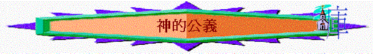

神的公義
＠──代表遊戲或活動或發問 ～──代表講解
引起動機遊戲：
@分組：每組用在指定的時間在海報中寫下關乎一切人不義的事，寫出最多的就勝出
～人有很多不義，但神卻是公義的神
講解（詩7:8-12）
一．神察看
＠問團友若一有錢人犯了罪，但最後沒人知道他的罪行，他最後也安逸過活，你認為公平嗎？試投票公平或不公平
～但神是知道的，神察看人一切的不義，人的心思與言語，神完全察看
二．神發怒
＠團友嘗試吹氣球，看那個最大
～神的怒氣如氣球，祂會發怒，人會積蓄神的怒氣，到有一日是會爆發的
三．神審判
＠分享在學校裡犯錯後，最重的處罰方式
～人做錯，神會審判的，神預備了火湖（有不滅的蟲）給犯罪的人
四．人可回頭
＠每人站立，慢慢及安全地轉動自己的頭，最多可轉幾大幅度（但要小心）
～人有時會「硬頸」，心剛硬，不肯回轉
～但神仍等待人，人若願回頭，認自己的罪，神是信實公義的，必赦免我們的不義
祈禱